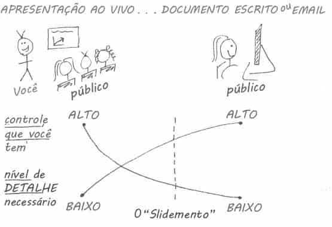
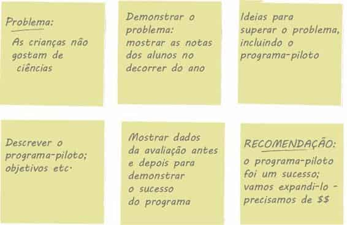

Pode parecer absurdo, mas o sucesso na visualização de dados não começa com a visualização de dados. Em vez disso, antes de começar a criar uma apresentação ou comunicação de dados, a atenção e o tempo devem estar voltados a entender o contexto da necessidade de se comunicar. Neste capítulo, vamos nos concentrar no entendimento dos componentes importantes do contexto e discutir algumas estratégias para ajudar a prepará-lo para o sucesso quando se trata de comunicar dados visualmente.
Antes de entrarmos nos detalhes específicos do contexto, há uma distinção importante a fazer entre análise exploratória e explanatória. A análise exploratória é a que você faz para compreender os dados e descobrir o que pode ser digno de nota ou interessante a destacar para outras pessoas. Quando fazemos uma análise exploratória, é como procurar pérolas em ostras. Talvez precisemos abrir 100 ostras (testar 100 diferentes hipóteses ou examinar os dados de 100 diferentes maneiras) para encontrar, digamos, duas pérolas.
Quando estamos a ponto de comunicar nossa análise para nosso público, queremos estar no espaço explanatório, significando que você tem algo específico que deseja explicar, uma história específica que deseja contar — provavelmente sobre aquelas duas pérolas.
Com muita frequência, as pessoas se enganam e pensam que podem mostrar uma análise exploratória (simplesmente apresentar os dados, todas as 100 ostras), quando deveriam mostrar a explanatória (dedicar tempo para transformar os dados em informações que possam ser consumidas por um público: as duas pérolas). É um erro compreensível. Depois de se fazer toda uma análise, pode ser tentador mostrá-la inteira ao seu público, como evidência de todo o trabalho que você fez e da robusteza da análise. Resista a esse desejo. Você estaria fazendo seu público reabrir todas as ostras!
Concentre-se nas pérolas, a informação que seu público precisa saber.
Aqui, nos concentramos na análise explanatória e na comunicação.
Leitura recomendada
Para quem estiver interessado em aprender mais sobre análise, consulte o livro Data Points, de Nathan Yau. Yau enfoca a visualização de dados como veículo, não como ferramenta, e dedica uma boa parte de sua obra à discussão dos dados em si e das estratégias para explorá-los e analisá-los.
Quando tratamos da análise explanatória, precisamos pensar em algumas coisas e sermos extremamente claros antes de visualizarmos qualquer dado ou criarmos conteúdo. Primeiramente, é importante entender bem quem é seu público e como ele o interpreta. Isso pode ajudá-lo a identificar pontos em comum que o ajudarão a garantir que sua mensagem seja ouvida. Segundo, você deve deixar claro como deseja que seu público aja, levar em conta como vai se comunicar com ele e o tom geral a ser estabelecido para sua comunicação.
Somente depois de passar por essas duas primeiras etapas, é que você está pronto para passar para a terceira, que é: como usar dados para ajudar a defender a sua ideia?
Vamos ver com mais detalhes o contexto de quem, o quê e como.
Seu público
Quanto mais específico você puder ser a respeito de quem é seu público, melhor a posição em que estará para ter sucesso na comunicação. Evite públicos vagos como “interessados internos e externos” ou “quem possa estar interessado” — ao tentar se comunicar de uma só vez com muitas pessoas diferentes, com necessidades distintas, você se coloca em uma posição na qual não consegue se comunicar com nenhuma delas tão eficientemente quanto poderia se estreitasse seu público-alvo. Às vezes, isso significa criar diferentes comunicações para diferentes públicos. Identificar o tomador de decisão é uma maneira de restringir seu público. Quanto mais você souber sobre seu público, mais bem posicionado estará para saber como ser entendido por ele e para estabelecer uma comunicação que satisfaça a necessidade dele e a sua.
Você
É de grande ajuda pensar na relação que você tem com seu público e como espera que ele o perceba. Será a primeira vez que vocês se encontrarão por meio dessa comunicação ou já têm uma relação estabelecida? Ele já o considera especialista ou você precisa trabalhar para estabelecer credibilidade? Essas são considerações importantes quando se trata de determinar como sua comunicação será estruturada e se e quando os dados serão usados, podendo impactar a ordem e o fluxo da história global que você pretende contar.
Leitura recomendada
No livro Ressonância: Apresente Histórias Visuais que Encantem o Público (Ed. Alta Books), de Nancy Duarte, a autora recomenda considerar seu público como um herói e destaca estratégias específicas para conhecê-lo, segmentá-lo e estabelecer pontos em comum. Uma versão multimídia gratuita em inglês está disponível em duarte.com.
Ação
Esse é o ponto no qual você reflete sobre como tornar o que comunica relevante para seu público e forma um claro entendimento do motivo pelo qual ele deve se importar com o que você diz. Você sempre deve querer que seu público saiba ou faça algo. Se não conseguir articular isso de forma concisa, deve verificar se precisa mesmo fazer a comunicação.
Para muitas pessoas, esse pode ser um cenário desconfortável.
Frequentemente, esse desconforto parece ser provocado pela crença de que o público sabe mais que o apresentador e, portanto, deve escolher se e como vai agir de acordo com a informação apresentada. Essa suposição é falsa. Se é você quem está analisando e comunicando os dados, provavelmente os conhece melhor — é o especialista no assunto. Isso o coloca em uma posição única para interpretar os dados e ajudar a conduzir as pessoas ao entendimento e à ação. Em geral, quem comunica dados precisa adotar uma postura mais confiante quando se trata de fazer observações e recomendações específicas com base em sua análise. Se você não fizer isso repetidamente, se sentirá fora de sua zona de conforto.
Comece a fazer isso agora — com o tempo, ficará mais fácil. E saiba que, mesmo que você destaque ou recomende a coisa errada, isso estimulará o tipo correto de conversa focada na ação.
Quando não for adequado recomendar explicitamente uma ação, estimule a discussão voltada para uma. Sugerir possíveis próximos passos pode ser uma maneira excelente de manter a conversa ativa, pois isso dá ao seu público um estímulo para reagir, em vez de começar com uma lousa em branco. Se você simplesmente apresenta dados, é fácil seu público dizer: “Ah, isso é interessante”, e passar para o próximo assunto. Mas se você exige ação, seu público precisa tomar a decisão de obedecer ou não. Isso provoca uma reação mais produtiva em seu público, a qual pode levar a uma conversa mais produtiva — que poderia jamais ser iniciada se você não tivesse recomendado a ação.
Estímulo à ação
Aqui estão algumas palavras que funcionam como ideia inicial na hora de definir o que você quer de seu público:
aceitar | acreditar | apoiar | aprender | assegurar | autorizar | buscar | colaborar | começar | concordar | criar | defender | demonstrar empatia | desejar | diferenciar | empoderar | encorajar | engajar | entender | estabelecer | estimular | examinar | facilitar | familiarizar | fazer | formar | gostar | implementar | incluir | influenciar | iniciar | investir | lembrar | mudar | persuadir | planejar | promover | receber | recomendar | relatar | responder | saber | simplificar | tentar | validar
Mecanismo
Como você irá se comunicar com seu público? O método a ser usado para se comunicar com seu público tem implicações em diversos fatores, incluindo o controle que você terá sobre como o público entende a informação e o nível de detalhe a ser explicitado. Podemos pensar no mecanismo de comunicação ao longo de uma sequência contínua, com uma apresentação ao vivo à esquerda e um documento escrito ou e-mail à direita, como mostrado na Figura 1.1. Considere o nível de controle que você tem sobre como a informação é consumida, assim como o nível de detalhe necessário nas duas extremidades do espectro.

FIGURA 1.1 SEQUÊNCIA CONTÍNUA DO MECANISMO DE COMUNICAÇÃO
À esquerda, com uma apresentação ao vivo, você (o apresentador) tem total controle. Você determina o que e quando o público vê e quando vê. Você pode responder a indícios visuais para acelerar, reduzir a velocidade ou entrar em um ponto específico com mais ou menos detalhes. Nem todos os detalhes precisam estar diretamente na comunicação (a apresentação ou conjunto de slides), porque você, o especialista no assunto, está lá para responder a quaisquer perguntas que surjam no curso da apresentação, e deve estar pronto e preparado para fazer isso independente do detalhe contido na apresentação em si.
Em apresentações ao vivo, a prática leva à perfeição
Não use seus slides como seu teleprompter! Se você estiver lendo cada slide em voz alta durante uma apresentação, os estará usando dessa forma. Isso gera uma experiência penosa para o público. Você precisa conhecer o conteúdo para fazer uma boa apresentação e isso significa prática, prática e mais prática! Use poucos slides, e só coloque neles coisas que ajudem a reforçar o que você dirá. Seus slides podem lembrá-lo do próximo tópico, mas não devem servir como suas anotações de palestra.
Veja algumas dicas para você ficar à vontade com seu material quando se preparar para sua apresentação:
Escreva suas anotações de palestra com os pontos importantes a serem apresentados em cada slide.
Pratique em voz alta o que você quer dizer: isso ativa uma parte diferente do cérebro, que o ajuda a lembrar do tema da sua discussão. Além disso, o obriga a articular as transições entre slides que às vezes atrapalha os apresentadores.
Faça uma apresentação simulada para um amigo ou colega.
No lado direito do espectro, com um documento escrito ou e-mail, você (o criador do documento ou e-mail) tem menos controle. Nesse caso, o público controla como consome a informação. O nível de detalhe necessário aqui normalmente é mais alto, pois você não está lá para ver e responder aos questionamentos de seu público. Assim, o documento precisará tratar diretamente de mais possíveis perguntas.
Em um mundo ideal, o resultado dos dois lados dessa sequência contínua seria totalmente diferente — poucos slides para uma apresentação ao vivo (pois você está lá para explicar tudo com mais detalhes, conforme necessário) e documentos mais densos quando o público tiver que absorver tudo sozinho.
Mas, na realidade — devido ao tempo e a outras restrições —, muitas vezes o mesmo produto é criado para tentar satisfazer ambas as necessidades. Isso faz surgir o slidemento, um único documento destinado a atender a essas duas necessidades. Isso apresenta alguns desafios, por causa das necessidades diversas que precisam ser satisfeitas, mas vamos analisar as estratégias para tratar desses desafios e superá-los, mais adiante no livro.
Neste começo do processo de comunicação, é importante identificar o principal veículo de comunicação a ser utilizado: apresentação ao vivo, documento escrito ou outro. Considerações sobre o controle que você terá sobre como seu público absorverá a informação e o nível de detalhe necessário se tornarão muito importantes uma vez que o conteúdo comece a ser gerado.
Tom
Outra consideração importante é o tom desejado para a comunicação a ser transmitida para seu público. Você está comemorando um êxito? Está tentando estimular uma tomada de ação? O assunto é leve ou sério? O tom desejado para sua comunicação terá implicações nas escolhas de design, as quais discutiremos em capítulos futuros. Por enquanto, pense a respeito e especifique o tom geral que você deseja estabelecer ao tomar o caminho da visualização de dados.
Por fim — e somente após podermos articular claramente quem é nosso público e o que precisamos que eles saibam ou façam —, podemos considerar os dados e fazer a pergunta: Quais dados estão disponíveis e que ajudarão a apresentar minha ideia? Dados se tornam a evidência que corrobora a história que você vai construir e contar. Nos capítulos subsequentes, vamos discutir muito mais sobre como apresentar esses dados visualmente.
Ignorar os dados que não corroboram?
Você poderia supor que mostrar apenas os dados que respaldam sua ideia e ignorar o resto tornará sua tese mais forte. Não recomendo isso. Além de ser enganoso, por retratar uma história unilateral, isso é muito arriscado. Um público perspicaz encontrará furos em uma história que não se sustenta ou em dados que mostram um aspecto, mas ignoram o resto. A quantia correta de contexto e dados contra e a favor vai variar de acordo com a situação, com o grau de confiança que seu público tem com você e outros fatores.
Considere um exemplo para ilustrar esses conceitos. Imagine que você é professor de ciências do quarto ano e acabou de encerrar um curso de verão experimental sobre ciências, destinado a apresentar esse assunto chato para as crianças. Você avaliou os alunos no início e no final do programa para saber se e como as percepções sobre ciências deles mudaram. Você acha que os dados mostram uma história de grande sucesso e gostaria de continuar a oferecer o curso de verão sobre ciências.
Vamos começar identificando nosso público. Existem vários públicos diferentes em potencial que poderiam estar interessados nessa informação: pais de alunos que participaram do curso, pais de possíveis futuros participantes, os próprios futuros participantes em potencial, outros professores que possam estar interessados em fazer algo semelhante ou o comitê de orçamento que controla os recursos financeiros necessários para continuar o programa. Você pode imaginar como a história que contaria a cada um desses públicos pode variar. A ênfase pode mudar. A chamada para ação seria diferente para os diferentes grupos. Os dados que você mostraria (ou a decisão de mostrar os dados) poderiam ser diferentes para os diversos públicos. Se criássemos uma única comunicação para tratar das necessidades de todos esses públicos com necessidades diferentes, você pode imaginar como é provável que ela não satisfaça exatamente a necessidade de determinado público. Isso ilustra a importância de identificar um público específico e compor uma comunicação tendo esse público específico em mente.
Vamos supor que, neste caso, o público com o qual queremos nos comunicar seja o comitê de orçamento, que controla os recursos financeiros necessários para continuarmos o programa.
Agora que respondemos a pergunta do quem e o quê, se torna mais fácil de identificar e articular. Se estamos tratando com o comitê de orçamento, um enfoque provável seria demonstrar o sucesso do programa e solicitar um volume de recursos financeiros específico para continuar a oferecê-lo. Depois de identificar quem é nosso público e o que precisamos dele, podemos pensar sobre os dados disponíveis que atuarão como evidência da história que queremos contar. Podemos aproveitar os dados coletados por meio da avaliação feita no início e no fim do programa para ilustrarmos o aumento das percepções positivas em relação à ciência, antes e depois do curso de verão.
Esta não será a última vez que vamos considerar esse exemplo. Vamos recapitular quem identificamos como nosso público, o que precisamos que eles saibam e façam, e os dados que nos ajudarão a defender nossa tese:
Quem: O comitê de orçamento que pode aprovar os recursos financeiros para a continuação do curso de verão.
O quê: O curso de verão sobre ciências foi um sucesso; favor aprovar o orçamento de R$ X para continuarmos.
Como: Ilustrar o sucesso com dados coletados por meio da avaliação realizada antes e depois do programa-piloto.
Frequentemente, a comunicação ou o resultado que está sendo criado é pedido por alguém: um cliente, um interessado ou seu chefe. Isso significa que talvez você não tenha todo o contexto e precise consultar o solicitante para entender a situação completamente. Às vezes, há um contexto adicional na cabeça desse solicitante, o qual ele talvez presuma ser conhecido ou não pense em dizer em voz alta. A seguir há algumas perguntas que você pode usar ao trabalhar para trazer à tona essas informações. Se você está no lado solicitante da comunicação, pedindo à sua equipe de apoio para elaborar a comunicação, pense em como responder a estas perguntas antecipadamente: Quais informações são relevantes ou fundamentais?
Quem é o público ou o tomador de decisão? O que sabemos a respeito dele?
Quais predisposições nosso público tem que possa fazê-lo apoiar ou resistir à nossa mensagem?
Quais dados disponíveis reforçariam nossa tese? Nosso público conhece esses dados ou é novidade?
Onde estão os riscos: quais fatores poderiam enfraquecer nossa tese e precisam ser olhados com atenção?
Como seria um resultado bem-sucedido?
Se você tivesse apenas um período de tempo limitado ou uma única frase para dizer ao seu público o que ele precisa saber, o que diria?
Em particular, acredito que as duas últimas perguntas podem levar a uma conversa reveladora. Saber qual é o resultado desejado antes de começar a preparar a comunicação é fundamental para estruturá-la bem. Colocar uma restrição significativa na mensagem (um curto período de tempo ou uma única frase) pode ajudá-lo a reduzir a comunicação global à única mensagem mais importante. Para isso, existem dois conceitos que recomendo saber e empregar: a história de 3 minutos e a Grande Ideia.
A noção por trás de cada um desses conceitos é que você pode reduzir o “então, o quê” a um parágrafo e, em última análise, a uma única declaração concisa. É preciso realmente conhecer seu material — saber quais são as partes mais importantes e também o que não é essencial na versão simplificada. Embora pareça fácil, ser conciso muitas vezes é mais desafiador do que ser prolixo. O matemático e filósofo Blaise Pascal reconheceu isso em seu francês nativo, com uma declaração que, traduzida, em termos gerais, diz
“Eu teria escrito uma carta mais curta, mas não tive tempo” (um pensamento frequentemente atribuído a Mark Twain).
A história de 3 minutos é exatamente isso: se você tivesse apenas três minutos para dizer ao seu público o que ele precisa saber, o que diria? Essa é uma maneira excelente de garantir que você seja claro e consiga articular a história que quer contar. A capacidade de fazer isso elimina sua dependência de slides ou utensílios para visualização para uma apresentação. Isso é útil na situação em que seu chefe pergunta no que você está trabalhando ou se você está em um elevador com um de seus interessados e quer dar a ele um resumo rápido. Ou então, se sua meia hora na agenda é reduzida para dez ou cinco minutos. Se você souber exatamente o que deseja comunicar, poderá fazer com que se encaixe no tempo dado, mesmo que não seja aquele para o qual está preparado.
A Grande Ideia reduz o “então, o quê” ainda mais: a uma única frase. Esse é um conceito que Nancy Duarte discute em seu livro, Ressonância (Alta Books, 2012). Ela diz que a Grande Ideia tem três componentes:
1. Deve articular seu ponto de vista único;
2. Deve transmitir o que está em jogo; e
3. Deve ser uma frase completa.
Vamos considerar uma história de 3 minutos ilustrativa e a Grande Ideia aproveitando o exemplo do curso de verão sobre ciências apresentado antes.
História de 3 minutos: um grupo do nosso departamento de ciências estava em um debate livre sobre como resolver um problema permanente que temos com os alunos que chegam à quarta série. Parece que, quando as crianças têm sua primeira aula de ciências, chegam com a postura de que será difícil e que não gostarão. No início do ano escolar, demora um bom tempo para superar isso. Então, pensamos: e se tentarmos expor as crianças à ciência mais cedo? Podemos influenciar a percepção delas?
Fizemos um projeto-piloto de um curso de aprendizado no verão passado, com o objetivo de fazer justamente isso. Convidamos alunos do ensino básico e formamos um grande grupo de crianças do segundo e do terceiro ano. Nosso objetivo era expô-los mais cedo à ciência, na esperança de formarmos uma percepção positiva. Para saber se fomos bem-sucedidos, avaliamos os alunos antes e depois do programa. Descobrimos que, ao entrar no programa, o maior segmento dos alunos, 40%, se sentia apenas
“Bem” em relação à ciência, enquanto, após o programa, a maioria mudou para percepções positivas, com quase 70% do total de alunos expressando algum grau de interesse nas ciências. Achamos que isso demonstra o sucesso do programa e que devemos não apenas continuar a oferecê-lo, mas também expandir nosso alcance com sua continuidade.
Grande Ideia: O programa piloto de verão foi um sucesso na melhoria das percepções dos alunos sobre ciências e, graças a esse sucesso, recomendamos continuar a oferecê-lo continuamente; favor aprovar nosso orçamento para esse programa.
Quando você tiver articulado sua história clara e concisamente, criar o conteúdo para sua comunicação se tornará muito mais fácil. Vamos mudar de assunto agora e discutir uma estratégia específica no que diz respeito ao planejamento de conteúdo: o storyboard.
A criação de um Storyboard talvez seja a coisa mais importante a ser feita antecipadamente, para garantir que a comunicação construída atinja o ponto desejado. O storyboard estabelece uma estrutura para sua comunicação. É um resumo visual do conteúdo a ser criado. Pode estar sujeito a alteração, à medida que você trabalha nos detalhes, mas estabelecer uma estrutura desde cedo preparará você para o sucesso. Quando puder (e fizer sentido), obtenha a aceitação de seu cliente ou do interessado nessa etapa. Isso ajudará a garantir que o que está sendo planejado esteja alinhado com o que é necessário.
Com relação ao storyboard, o maior conselho que posso dar é este: não comece com software de apresentação. É muito fácil entrar no modo de geração de slides sem pensar em como as partes se encaixam e acabar com uma apresentação pesada que não diz nada. Além disso, quando começamos a criar conteúdo no computador, acontece algo que nos faz criar um certo apego. E esse apego pode ser tal que, mesmo sabendo que o que criamos não está exatamente de acordo ou que deve ser alterado ou eliminado, às vezes resistimos a fazer isso, por causa do trabalho já dispendido nele para chegar ao ponto onde está.
Evite esse apego (e trabalho!) desnecessário, começando com tecnologia simples. Use um quadro de avisos, notas adesivas ou papel. É muito mais fácil rabiscar uma ideia em uma folha de papel ou jogar fora uma nota adesiva sem ter o mesmo sentimento de perda de quando se corta algo em que passou tempo criando com o computador. Gosto de usar notas adesivas quando faço o storyboard, porque é possível reorganizar (e adicionar e remover) as partes facilmente, para explorar diferentes fluxos de narrativa.
Se fizéssemos o storyboard de nossa comunicação para o curso de verão sobre ciências, ele poderia ser como a Figura 1.2.
Note que nesse exemplo de storyboard a Grande Ideia está no final, na recomendação. Talvez queiramos pensar na possibilidade de destacá-lo para garantir que nosso público não perca o ponto principal e para ajudar a definir o motivo pelo qual estamos nos comunicando com ele e porque ele deve se preocupar com isso. Vamos discutir mais considerações relacionadas à ordem e ao fluxo da narrativa no Capítulo 7.

FIGURA 1.2 EXEMPLO DE STORYBOARD
Quando se trata de análise explanatória, a capacidade de articular de forma concisa e exata com quem você deseja se comunicar e o que deseja transmitir, antes de começar a construir conteúdo, reduz as iterações e ajuda a garantir que a comunicação construída atinja a finalidade pretendida. Compreender e empregar conceitos como a história de 3 minutos, a Grande Ideia e o storyboard permitirá que você conte sua história clara e sucintamente e identifique o fluxo desejado.
Embora fazer uma pausa antes de realmente elaborar a comunicação possa parecer uma etapa que diminui sua velocidade, na verdade isso ajuda a garantir que você tenha um sólido entendimento do que quer fazer antes de começar a criar conteúdo, o que fará com que economize tempo mais adiante.
Com isso, considere sua primeira lição aprendida. Agora você entende a importância do contexto.